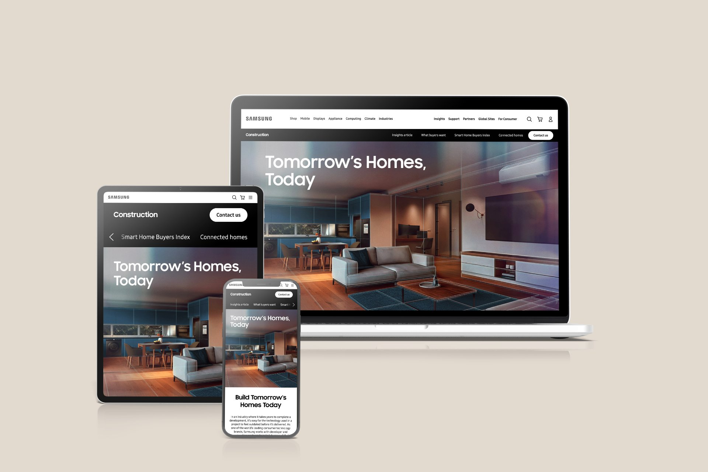

Samsung B2B Lead Generation Page
Repositioning Samsung from vendor to strategic partner — transforming their B2B digital presence for Construction and Private Rental Sector decision-makers.

The Problem
A missed opportunity to lead, not just sell
Samsung's existing B2B digital presence struggled to resonate with senior decision-makers in the Construction and Private Rental Sector. The experience focused heavily on product features, positioning Samsung as a supplier rather than a long-term strategic partner.
Samsung's current B2B presence doesn't speak to our specific needs in construction and PRS. We need partners who understand our industry challenges — not just suppliers pushing products.
— David Chen, Construction Project Manager- Generic, product-led messaging failed to resonate with senior B2B decision-makers
- Lack of industry-specific value propositions reduced trust and engagement
- Lead forms felt transactional and sales-driven
- Partnership stories and collaborative strengths were underrepresented
- Missed opportunities to capture high-intent B2B leads
Solution Vision
Consultative, not promotional
Transform Samsung's B2B presence from a product showcase into a consultative partnership platform — one that demonstrates industry expertise, builds trust, and guides users toward meaningful engagement without feeling sales-driven. The four design goals: position Samsung as a strategic partner not a vendor, communicate industry understanding and credibility, improve lead quality over lead quantity, and align UX decisions with Samsung's broader business objectives.
Research
Understanding business alignment
I facilitated cross-department workshops with Samsung's B2B marketing, sales, and technical teams. Research methods included stakeholder interviews, target audience analysis, competitive analysis, content strategy review, and analytics review. I coordinated stakeholder alignment across diverse perspectives to transform the platform from a product catalogue into a consultative partnership tool.
We need Samsung to position themselves as a strategic partner who understands our long-term vision — not just another vendor selling individual products.
— Sarah Williams, PRS Development Director

Insights
Defining the strategic challenge
Problem Statement: How might Samsung reposition its B2B digital presence to clearly communicate partnership value, industry understanding, and long-term collaboration — while still supporting lead generation goals?
The primary persona was a mid-to-senior B2B decision-maker — time-poor and outcome-focused, skeptical of sales-led messaging, valuing credibility, proof, and long-term collaboration, and frustrated by generic content and unclear value propositions. Because this audience prioritises trust over exploration, I deprioritised product grids and promotional messaging in favour of scannable narratives, proof points, and consultative calls-to-action.

Ideation
From strategy to structure
Multiple narrative and structural page concepts were explored through wireframing and rapid prototyping. A value vs. effort matrix was used to prioritise concepts aligned with business impact. Three things were deliberately rejected: aggressive lead-capture forms (risked eroding trust), feature-heavy product sections (reinforced vendor perception), and sales-driven language (conflicted with partnership positioning). The final approach focused on clarity, credibility, and restraint.


A clear, linear information structure was designed to guide users from industry context → partnership value → proof and credibility → meaningful engagement — ensuring intuitive navigation and minimal cognitive load for busy decision-makers.

Design & Validation
Iterating toward consultative partnership
Low-fidelity wireframes tested narrative flow and hierarchy, refined through iterative cycles with stakeholder feedback and user testing insights. High-fidelity designs were built with WCAG 2.2 AA compliance — proper colour contrast, semantic HTML, keyboard navigation support, and screen reader compatibility. Close collaboration with the development team ensured designs were technically feasible across responsive HTML, CSS, and JavaScript frameworks.
.ryCqD_D-.png)
.DIobK5Ne.png)
.Bs5NSWnd.png)
Results
Strategic repositioning validated
Stakeholders confirmed the design better aligned with Samsung's strategic goals, supported higher-quality lead generation, and provided a scalable framework for future B2B initiatives. While not yet deployed live, the project delivered a validated strategic direction with cross-functional buy-in.
"Andrew transformed how we present ourselves to B2B clients. He facilitated workshops across our marketing, sales, and technical teams, turning conflicting priorities into a unified vision. The new platform positions us as strategic partners, not just vendors. Our sales team reports that prospects spend significantly more time engaging with our content, and the quality of leads has noticeably improved."
Takeaways